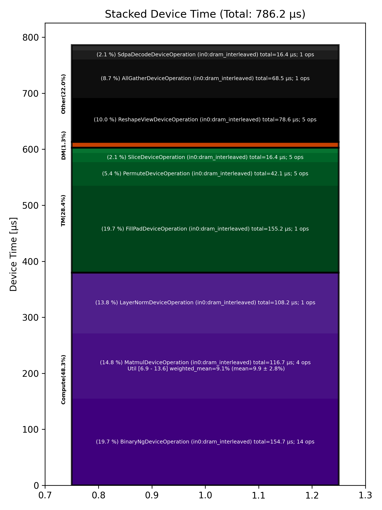

🚀 Performance Report 🚀 ======================== ID Total % Bound OP Code Device Device Time Op-to-Op Gap Cores DRAM DRAM % FLOPs FLOPs % Math Fidelity ------------------------------------------------------------------------------------------------------------------------------------------------------------------------- 19 1.2 % LayerNormDeviceOperation 15 108 μs 1 BF16, BF16 => BF16 51 2.9 % SLOW MatmulDeviceOperation 32 x 2880 x 512 24 42 μs 222 μs 16 40 GB/s 14.0 % 2.3 TFLOPs 6.9 % HiFi2 BF16 x BFP8 => BF16 70 1.1 % ReshapeViewDeviceOperation 0 13 μs 90 μs 72 BF16 => BF16 98 1.9 % SliceDeviceOperation 27 5 μs 168 μs 72 BF16 => BF16 146 2.9 % BinaryNgDeviceOperation 23 16 μs 249 μs 72 BF16, BF16 => BF16 178 2.6 % SliceDeviceOperation 23 5 μs 233 μs 72 BF16 => BF16 220 3.0 % BinaryNgDeviceOperation 10 15 μs 261 μs 72 BF16, BF16 => BF16 246 2.7 % BinaryNgDeviceOperation 12 7 μs 245 μs 72 BF16, BF16 => BF16 286 3.0 % BinaryNgDeviceOperation 8 16 μs 260 μs 72 BF16, BF16 => BF16 299 2.7 % BinaryNgDeviceOperation 7 15 μs 235 μs 72 BF16, BF16 => BF16 341 2.8 % BinaryNgDeviceOperation 13 7 μs 249 μs 72 BF16, BF16 => BF16 368 3.0 % ConcatDeviceOperation 21 8 μs 266 μs 72 BF16, BF16 => BF16 411 5.7 % SLOW MatmulDeviceOperation 32 x 2880 x 64 17 30 μs 500 μs 2 12 GB/s 4.3 % 0.4 TFLOPs 9.6 % HiFi2 BF16 x BFP8 => BF16 445 1.5 % ReshapeViewDeviceOperation 9 3 μs 136 μs 32 BF16 => BF16 468 1.9 % SliceDeviceOperation 14 2 μs 175 μs 16 BF16 => BF16 496 1.0 % PermuteDeviceOperation 21 4 μs 93 μs 16 BF16 => BF16 537 1.1 % BinaryNgDeviceOperation 18 5 μs 96 μs 72 BF16, BF16 => BF16 564 1.0 % SliceDeviceOperation 14 2 μs 95 μs 16 BF16 => BF16 605 3.3 % PermuteDeviceOperation 9 4 μs 302 μs 16 BF16 => BF16 636 1.1 % BinaryNgDeviceOperation 10 5 μs 94 μs 72 BF16, BF16 => BF16 670 1.9 % BinaryNgDeviceOperation 8 3 μs 173 μs 72 BF16, BF16 => BF16 682 1.1 % BinaryNgDeviceOperation 31 5 μs 100 μs 72 BF16, BF16 => BF16 718 1.7 % BinaryNgDeviceOperation 4 5 μs 149 μs 72 BF16, BF16 => BF16 738 2.7 % BinaryNgDeviceOperation 27 3 μs 244 μs 72 BF16, BF16 => BF16 792 1.1 % ConcatDeviceOperation 17 2 μs 99 μs 32 BF16, BF16 => BF16 802 2.0 % InterleavedToShardedDeviceOperation 27 1 μs 180 μs 16 BF16 => BF16 833 2.5 % PagedUpdateCacheDeviceOperation 26 4 μs 224 μs 16 BF16, BF16 => BF16 868 3.1 % SLOW MatmulDeviceOperation 32 x 2880 x 64 10 30 μs 258 μs 2 12 GB/s 4.3 % 0.4 TFLOPs 9.6 % HiFi2 BF16 x BFP8 => BF16 913 1.4 % ReshapeViewDeviceOperation 22 3 μs 122 μs 32 BF16 => BF16 952 1.8 % PermuteDeviceOperation 17 4 μs 163 μs 32 BF16 => BF16 979 2.8 % InterleavedToShardedDeviceOperation 15 1 μs 258 μs 16 BF16 => BF16 993 3.0 % PagedUpdateCacheDeviceOperation 26 4 μs 271 μs 16 BF16, BF16 => BF16 1039 1.1 % PermuteDeviceOperation 20 8 μs 93 μs 72 BF16 => BF16 1063 2.6 % SdpaDecodeDeviceOperation 28 16 μs 225 μs 72 BF16, BF16 => BF16 1107 2.2 % PermuteDeviceOperation 15 22 μs 178 μs 72 BF16 => BF16 1142 2.5 % ReshapeViewDeviceOperation 12 13 μs 218 μs 16 BF16 => BF16 1160 3.7 % SLOW MatmulDeviceOperation 32 x 512 x 2880 18 15 μs 328 μs 45 113 GB/s 39.1 % 6.3 TFLOPs 13.6 % HiFi4 BF16 x BFP8 => BF16 1198 4.8 % AllGatherDeviceOperation 0 68 μs 374 μs 24 BF16 => BF16 1228 2.0 % FillPadDeviceOperation 6 155 μs 29 μs 8 BF16 => BF16 1273 0.7 % FastReduceNCDeviceOperation 18 10 μs 56 μs 72 BF16 => BF16 1281 0.9 % SliceDeviceOperation 26 3 μs 78 μs 72 BF16 => BF16 1337 2.2 % BinaryNgDeviceOperation 18 5 μs 202 μs 72 BF16, BF16 => BF16 1360 3.1 % ReshapeViewDeviceOperation 21 45 μs 242 μs 72 BF16 => BF16 1399 3.0 % BinaryNgDeviceOperation 16 49 μs 225 μs 72 BF16, BF16 => BF16 ------------------------------------------------------------------------------------------------------------------------------------------------------------------------- 100.0 % 44 device ops, 0 host ops, 0 signposts 786 μs 8,457 μs 📊 Stacked report 📊 ==================== Total % Op Code Device Time Sum Op Count Op Category Min FLOPs Max FLOPs Mean FLOPs Std FLOPs Weighted Mean FLOPs ----------------------------------------------------------------------------------------------------------------------------------------------------------------------------- 19.74 % FillPadDeviceOperation (in0:dram_interleaved) 155.16 μs 1 TM 19.67 % BinaryNgDeviceOperation (in0:dram_interleaved) 154.67 μs 14 Compute 14.84 % MatmulDeviceOperation (in0:dram_interleaved) 116.71 μs 4 Compute 6.86 % 13.59 % 9.91 % 2.77 % 9.12 % 13.76 % LayerNormDeviceOperation (in0:dram_interleaved) 108.20 μs 1 Compute 10.00 % ReshapeViewDeviceOperation (in0:dram_interleaved) 78.59 μs 5 Other 8.71 % AllGatherDeviceOperation (in0:dram_interleaved) 68.49 μs 1 Other 5.35 % PermuteDeviceOperation (in0:dram_interleaved) 42.09 μs 5 TM 2.08 % SdpaDecodeDeviceOperation (in0:dram_interleaved) 16.37 μs 1 Other 2.08 % SliceDeviceOperation (in0:dram_interleaved) 16.36 μs 5 TM 1.23 % ConcatDeviceOperation (in0:dram_interleaved) 9.64 μs 2 TM 1.22 % FastReduceNCDeviceOperation (in0:dram_interleaved) 9.63 μs 1 Other 1.05 % PagedUpdateCacheDeviceOperation (in0:dram_interleaved) 8.29 μs 2 DM 0.26 % InterleavedToShardedDeviceOperation (in0:dram_interleaved) 2.02 μs 2 DM -----------------------------------------------------------------------------------------------------------------------------------------------------------------------------
